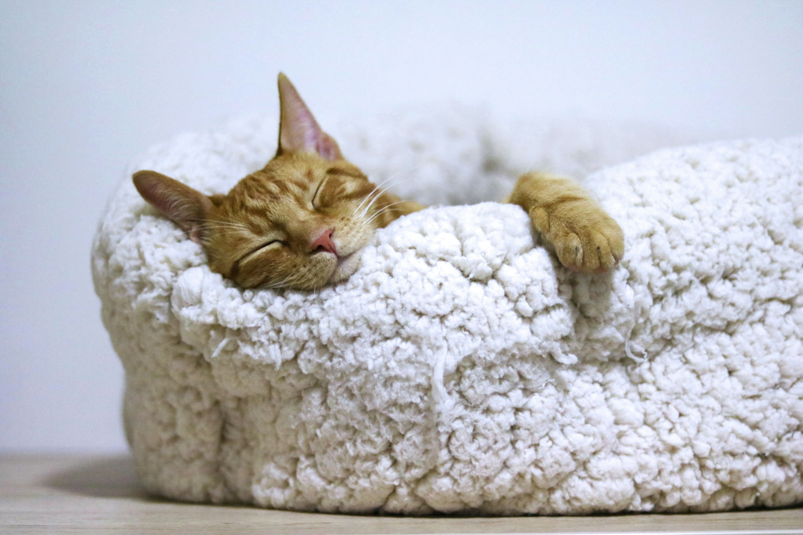

Devlog 6: Winding Down
As we approach the end of our production studio, we have slowly leaned off the accelerator, allowing breathing room for other course loads while we tie off the project’s loose ends and documentation. We’re really proud of what we’ve accomplished this semester, and we hope to see this project continued in some fashion.